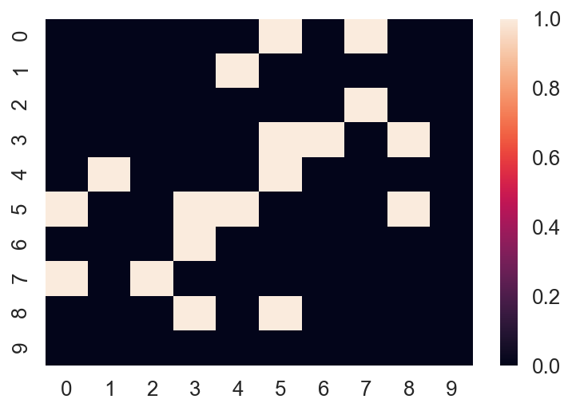
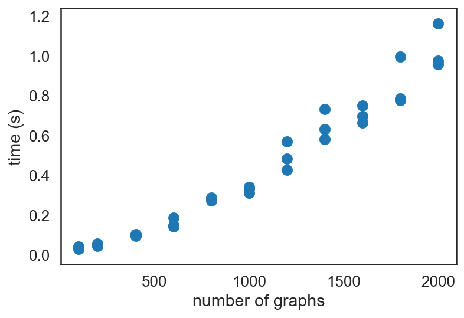
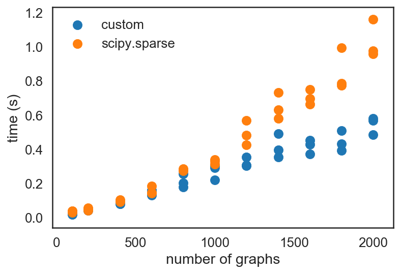
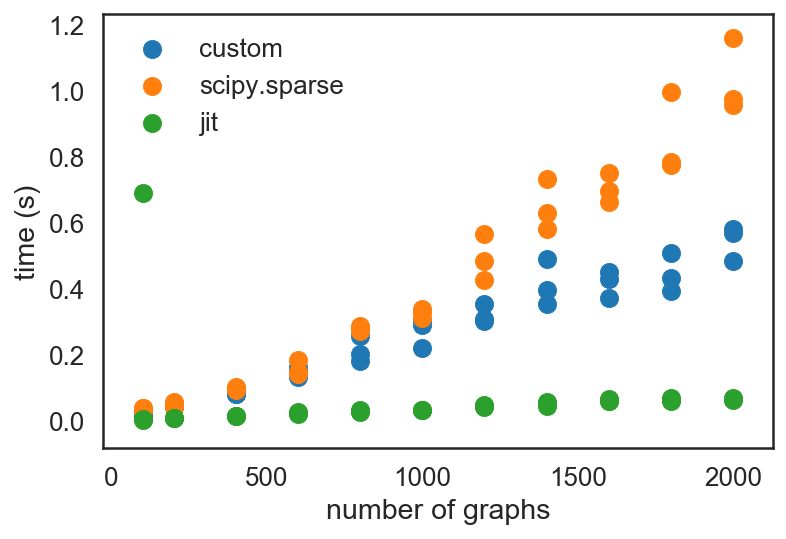

Optimizing Block Sparse Matrix Creation with Python
written by Eric J. Ma on 2018-09-04
graph optimization numba python data science sparse matrix
Introduction
At work, I recently encountered a neat problem. I'd like to share it with you all.
One of my projects involves graphs; specifically, it involves taking individual graphs and turning them into one big graph. If you've taken my Network Analysis Made Simple workshops before, you'll have learned that graphs can be represented as a matrix, such as the one below:
import networkx as nx import numpy as np import scipy.sparse as sp import matplotlib.pyplot as plt import seaborn as sns from tqdm import tqdm from typing import List from numba import jit sns.set_context('talk') sns.set_style('white') %load_ext autoreload %autoreload 2 %matplotlib inline %config InlineBackend.figure_format = 'retina'
G = nx.erdos_renyi_graph(n=10, p=0.2) A = nx.to_numpy_array(G) sns.heatmap(A)

Because the matrix is so sparse, we can actually store it as a sparse matrix:
A_sparse = nx.adjacency_matrix(G).tocoo() [A_sparse.row, A_sparse.col, A_sparse.data]
[array([0, 0, 1, 2, 3, 3, 3, 4, 4, 5, 5, 5, 5, 6, 7, 7, 8, 8], dtype=int32),
array([5, 7, 4, 7, 5, 6, 8, 1, 5, 0, 3, 4, 8, 3, 0, 2, 3, 5], dtype=int32),
array([1, 1, 1, 1, 1, 1, 1, 1, 1, 1, 1, 1, 1, 1, 1, 1, 1, 1], dtype=int64)]
The most straightforward way of storing sparse matrices is in the COO (COOrdinate) format, which is also known as the "triplet" format, or the "ijv" format. ("i" is row, "j" is col, "v" is value)
If we want to have two or more graphs stored together in a single matrix, which was what my projects required, then one way of representing them is as follows:
G2 = nx.erdos_renyi_graph(n=15, p=0.2) A2 = nx.to_numpy_array(G2) sns.heatmap(sp.block_diag([A, A2]).todense())

Now, notice how there's 25 nodes in total (0 to 24), and that they form what we call a "block diagonal" format. In its "dense" form, we have to represent $25^2$ values inside the matrix. That's fine for small amounts of data, but if we have tens of thousands of graphs, that'll be impossible to deal with!
You'll notice I used a function from scipy.sparse, the block_diag function, which will create a block diagonal sparse matrix from an iterable of input matrices.
block_diag is the function that I want to talk about in this post.
Profiling block_diag performance
I had noticed that when dealing with tens of thousands of graphs, block_diag was not performing up to scratch. Specifically, the time it needed would scale quadratically with the number of matrices provided.
Let's take a look at some simulated data to illustrate this.
%%time Gs = [] As = [] for i in range(3000): n = np.random.randint(10, 30) p = 0.2 G = nx.erdos_renyi_graph(n=n, p=p) Gs.append(G) A = nx.to_numpy_array(G) As.append(A)
Let's now define a function to profile the code.
from time import time from random import sample def profile(func): n_graphs = [100, 200, 400, 600, 800, 1000, 1200, 1400, 1600, 1800, 2000] data = [] for n in tqdm(n_graphs): for i in range(3): # 3 replicates per n start = time() func(sample(As, n)) end = time() data.append((n, end - start)) return data data_sp = profile(sp.block_diag) plt.scatter(*zip(*data_sp)) plt.xlabel('number of graphs') plt.ylabel('time (s)')

It is quite clear that the increase in time is super-linear, showing $O(n^2)$ scaling. (Out of impatience, I did not go beyond 50,000 graphs in this post, but at work, I did profile performance up to that many graphs. For reference, it took about 5 minutes to finish creating the scipy sparse matrix for 50K graphs.
Optimizing block_diag performance
I decided to take a stab at creating an optimized version of block_diag. Having profiled my code and discovering that sparse block diagonal matrix creation was a bottleneck, I implemented my own sparse block diagonal matrix creation routine using pure Python.
def _block_diag(As: List[np.array]): """ Return the (row, col, data) triplet for a block diagonal matrix. Intended to be put into a coo_matrix. Can be from scipy.sparse, but also can be cupy.sparse, or Torch sparse etc. Example usage: >>> row, col, data = _block_diag(As) >>> coo_matrix((data, (row, col))) :param As: A list of numpy arrays to create a block diagonal matrix. :returns: (row, col, data), each as lists. """ row = [] col = [] data = [] start_idx = 0 for A in As: nrows, ncols = A.shape for r in range(nrows): for c in range(ncols): if A[r, c] != 0: row.append(r + start_idx) col.append(c + start_idx) data.append(A[r, c]) start_idx = start_idx + nrows return row, col, data
Running it through the same profiling routine:
data_custom = profile(_block_diag) plt.scatter(*zip(*data_custom), label='custom') plt.scatter(*zip(*data_sp), label='scipy.sparse') plt.legend() plt.xlabel('number of graphs') plt.ylabel('time (s)')

I also happened to have listened in on a talk by Siu Kwan Lam during lunch, on numba, the JIT optimizer that he has been developing for the past 5 years now. Seeing as how the code I had written in _block_diag was all numeric code, which is exactly what numba was designed for, I decided to try optimizing it with JIT.
from numba import jit data_jit = profile(jit(_block_diag)) plt.scatter(*zip(*data_custom), label='custom') plt.scatter(*zip(*data_sp), label='scipy.sparse') plt.scatter(*zip(*data_jit), label='jit') plt.legend() plt.xlabel('number of graphs') plt.ylabel('time (s)')

Notice the speed-up that JIT-ing the code provided! (Granted, that first run was a "warm-up" run; once JIT-compiled, everything is really fast!)
My custom implementation only returns the (row, col, data) triplet. This is an intentional design choice - having profiled the code with and without calling a COO matrix creation routine, I found the JIT-optimized performance to be significantly better without creating the COO matrix routine. As I still have to create a sparse matrix, I ended up with the following design:
def block_diag(As): row, col, data = jit(_block_diag)(As) return sp.coo_matrix((data, (row, col))) data_wrap = profile(block_diag) plt.scatter(*zip(*data_custom), label='custom') plt.scatter(*zip(*data_sp), label='scipy.sparse') plt.scatter(*zip(*data_jit), label='jit') plt.scatter(*zip(*data_wrap), label='wrapped') plt.legend() plt.xlabel('number of graphs') plt.ylabel('time (s)')

You'll notice that the array creation step induces a consistent overhead on top of the sparse matrix triplet creation routine, but stays flat and trends the "jit" dots quite consistently. It intersects the "custom" dots at about $10^3$ graphs. Given the problem that I've been tackling, which involves $10^4$ to $10^6$ graphs at a time, it is an absolutely worthwhile improvement to JIT-compile the _block_diag function.
Conclusion
This was simultaneously a fun and useful exercise in optimizing my code!
A few things I would take away from this:
- Profiling code for bottlenecks can be really handy, and can be especially useful if we have a hypothesis on how to optimize it.
numbacan really speed up array-oriented Python computation. It lives up to the claims on its documentation.
I hope you learned something new, and I hope you also enjoyed reading this post as much as I enjoyed writing it!